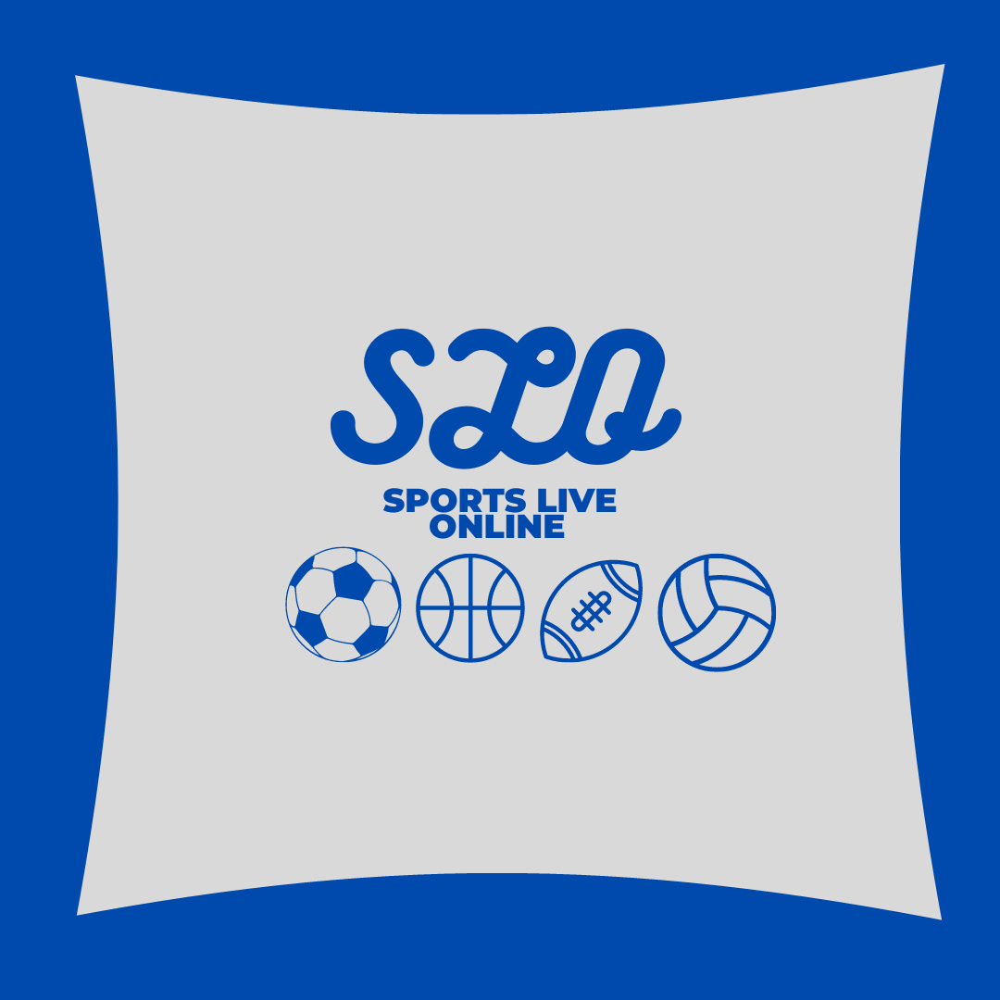

Entrar
Assinaturas
Sobre
Contato
SOBRE NÓS
Somos um projeto de streaming esportivo criado em abril de 2023 que visa a transmissão ao vivo de 4 esportes (Futebol, Basquete, Vôlei e Futebol Americano), por um preço acessível e diversas variedades de assinaturas
CONTATOS- Telefone:+55 19 2298-2004 | e-mail:slo@gmail.com | Instagram: @slostreaming